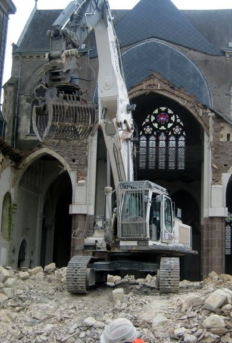

« Même si tu vis encore un quart de siècle tout sera pareil », – écrira Blok en 1912 dans son poème Pharmacie, réverbère, vent. Aujourd’hui, nous sommes témoins de la situation inverse. Nous vivons le moment de transition. « Le fondement sur lequel reposait la famille humaine depuis ses plus anciens essais d’organisation1 » est en train de s’effondrer. Les paradigmes habituels laissent place aux nouvelles valeurs « Nous cherchons notre idéal devant nous, tandis qu’il est derrière nous2 », – écrira E.-M. de Vogüé. Le phénomène de la déchristianisation se rapproche aujourd’hui à une vitesse effrayante de son point final – le remplacement du christianisme par la religion de l’humanisme.
Aujourd’hui, nous observons une étape cruciale de l’Histoire de la civilisation européenne – la mort de Dieu. Nietzsche a commencé à en sonner les cloches encore au XIXe siècle. Les humeurs antichrétiennes prônant l’élévation de l’Homme au-dessus de tout prennent leurs sources à l’époque de la Renaissance. C’est à cette période de retour du paganisme que commence le combat acharné avec le christianisme. Plus tard, le siècle des Lumières prend le relais. Au XIXe siècle c’est le Darwinisme qui continue le combat engagé par ses prédécesseurs. « A la place de la religion chrétienne vient la religion de la science », - constataient les intellectuels de l’époque. Après la Seconde Guerre mondiale surgit le phénomène des Droits de l’homme faisant de nous des êtres libres de toute religion.
Pour mieux comprendre la nouvelle idéologie, arrêtons-nous de près sur le concept des Droits de l’homme. Nés de la conception chrétienne d’une personnalité libre et responsable, les Droits de l’Hommes ne contiennent paradoxalement pas aujourd’hui la morale chrétienne. Selon Chesterton, leur morale est artificielle car elle provient de la réciprocité commune des intérêts. « La morale n’est pas née, – écrira Chesterton, – lorsqu’un homme a dit à un autre : « Je ne te frapperai pas si tu ne me frappes pas » – il n’y a aucune trace d’une telle transaction. Mais il est avéré que deux hommes ont dit : « Nous ne devons pas nous frapper dans ce lieu sacré. » Ils ont conquis leur morale en défendant leur religion. Ils n’ont pas cultivé le courage. Ils ont combattu pour l’autel et découvert qu’ils étaient devenus courageux3 ». On trouve la même idée sur la morale dans Le Déclin de l’Occident d’Oswald Spengler où l’auteur oppose la morale naturelle instinctive innée chez l’homme à la morale imposée, celle du Contrat Social, morale qui n’est pas donnée mais qu’il faut aller chercher pour réglementer la vie qui n’est plus capable de se réglementer elle-même. La première est comparée par le philosophe avec la vue d’un oiseau, l’autre – avec celle d’une grenouille4.
Les Droits de l’homme sortent aujourd’hui des cadres d’un simple concept prenant la forme d’une nouvelle religion, religion de l’Homme nouveau, religion sans Eternité où le pouvoir ne vient pas de Dieu mais de l’Homme. Le remplacement des religions par la nouvelle idéologie procurerait l’égalité totale de tous les êtres humains sans différences culturelles. Parlant de l’Europe en particulier, il s’agit non seulement de l’effacement des frontières économico-politiques et culturelles entre les nations, mais aussi de l’éradication de la pierre angulaire de la civilisation européenne – le christianisme. « Le christianisme fut le début de l’Europe de la même façon que la fin du christianisme désignera la fin de l’Europe5 », – écrira Merežkovskij dans son Règne de l’Antéchrist.
La religion des Droits de l’homme qui se cache sous « l’humanisme » signifie paradoxalement la déshumanisation de l’être humain. « On oublie aujourd’hui les vérités aussi durables que l’homme6 », – écrira Vogüé. L’humanisme a toujours eu une double nature, estime le professeur au MGIMO Olga Tchetverikova. D’un côté, il s’agit d’un humanisme civilisateur orienté sur le grand public et existant sous un emballage scientifique, de l’autre côté, il s’agit des sciences occultes des loges secrètes qui ne sont accessibles qu’aux élus. C’est cette deuxième nature, selon Tchetverikova, qui est à la base du projet idéologique mondial7.
Aujourd’hui, certains savants parlent du transhumanisme comme du dernier stade de l’humanisme. Les Droits de l’homme s’étant placés au-dessus de tout encouragent l’Homme à se donner le droit d’apporter des modifications à sa nature humaine, à dépasser ses pouvoirs physiques et mentaux. Dans ce contexte, nous pouvons parler de la fabrication du Post-Homme, asexué et immortel. « Prends de la vie tout ce que tu peux prendre », - voici le crédo de l’homme contemporain. Cette vision du monde crée aussi inévitablement le chaos dans le système des idées comme dans celui des mœurs ce qui facilite le contrôle de la société. « Divide et impera », - disaient les Romains.
A propos des Droits de l’homme et de l’idéologie humaniste il importe d’aborder le sujet de la norme. Qu’est-ce qui est considéré comme norme aujourd’hui ? Il est d’usage de définir la norme comme tout postulat proclamé dans les Droits de l’homme. Dans la déclaration de l’UNESCO de 1995 appelée Déclaration de la tolérance il est écrit que la morale absolue n’existe pas. Ce rejet de l’Absolu a comme conséquence la liberté sémantique de la notion « Droits de l’homme » dotant cette dernière de contenus de toutes sortes. La défaillance d’une telle liberté se fait remarquer par exemple entre 2008 et 2011 quand l’ONU accepte la résolution sur l’identité homosexuelle en tant qu’un des principes des Droits de l’homme.
Autrement dit, l’homosexualité a été inscrite dans les Droits de l’homme comme une nouvelle norme. L’identité homosexuelle représente ainsi un des droits que l’Homme possède. Toute critique des homosexuels est désormais vue comme la violation de leurs droits et la morale n’est pas capable d’en prendre dessus car elle n’est plus considérée. Dans cette situation, le Bien pourrait rapidement passer du domaine de l’absolu dans le domaine du relatif. « Fear is foul and foul is fear », - dit Macbeth au tout début de la pièce. Le Mal devient le Bien et le Bien devient le Mal. Chez Maïakovski il y a un poème que chaque Russe connaît par cœur - Что такое хорошо, и что такое плохо. Il y s’agit d’un petit garçon qui vient voir son père et lui demande de lui expliquer ce qui est bien et ce qui est mal. La question du Bien et du Mal est non seulement la question du domaine de l’Idéal mais aussi de celui du Matériel. Les études de la nature humaine (par exemple l’Ecole de Tikhomirov) montrent que le comportement de l’Homme se divise en deux grands groupes : Approcher et Eviter. Ce sont deux éléments puissants de notre expérience qui sont étroitement liés aux émotions positives et négatives.
Ainsi, selon Daniel Kahneman, psychologue américain et lauréat du Prix Nobel 2002, tous nos états contrôlés par notre conscience nous sont donnés dans la relation Bien/Mal. Tout vient de l’étape d’avant, de l’inconscient qui se manifeste dans les émotions représentant la base des systèmes génétiques archaïques des humains. Selon l’école de Tikhomirov, toute résolution du problème commence par une pré-résolution émotionnelle. Ce qui signifie que notre inconscient a déjà fait le choix bien avant notre choix conscient. Ces choix, selon Tikhomirov, se basent toujours sur la mesure Bien/Mal.
Aujourd’hui, le sujet de la substitution du Bien par le Mal et vice versa est traité par de nombreux théologiens, historiens, sociologues, philosophes, universitaires. La liste est très longue. On peut nommer, par exemple, Peter Berger pour qui la sécularisation de l’Europe représente le non-sens où encore Gilles Lipovetsky :
[…] l’hédonisme individualiste, en minant les instances traditionnelles de contrôle social et en évacuant du champ social toute transcendance, prive un certain nombre d’individus de repères et favorise un relativisme effréné qui semble laisser libre cours à toutes les élucubrations possibles8.
Quelle est exactement cette nouvelle idéologie mondiale et pourquoi est-elle dangereuse ? Pour répondre à cette question il importe de parler du Manifeste humaniste, traité idéologique prônant l’instauration d’une nouvelle éthique mondiale. Ce document nous aide à comprendre la nature antireligieuse du projet mondial que l’on nous fait accepter en douceur, étape par étape, depuis les années 30.
Commençons par le premier « Manifeste humaniste » datant de 1933. Le sujet de l’inutilité de la religion y est porté d’une manière encore très voilé. Il s’agit de la nécessité de l’adaptation des religions à la modernité. Les cultes religieux et la foi de nos pères y sont présentés comme archaïques et inadéquates à la société contemporaine.
En 1973, suit le deuxième manifeste signé entres autres par Julian Huxley, jadis président de l’UNESCO. Le document évoque cette fois-ci le caractère nocif de la religion traditionnelle dogmatique et autoritaire qui place, selon les auteurs du manifeste, les cultes et la foi en Dieu au-dessus des besoins et des envies de l’Homme. Les idéologies religieuses sont ainsi considérées comme une étape historique passée.
Le troisième manifeste, sorti en 2000, est encore plus révélateur. Les propos concernant le christianisme y sont poussés à l’extrême : « La religion est une approche mensongère à la vie. Elle trouble les esprits par la vision mystique des problèmes sociaux. Elle met en question la vérité absolue de la science. L’Homme doit enfin réaliser sa maturité et rejeter cette mythologie primitive qui lui empêche d’évoluer et de comprendre le monde ». Dans ce dernier manifeste, il s’agit ouvertement de l’humanisme planétaire présenté comme dogme.
Ces humanistes, que mettent-ils alors à la place de Dieu, inexistant d’après eux ? La réponse est simple – la science et le progrès. Ils veulent refaire le monde d’une telle manière que les Hommes puissent y vivre confortablement et sereinement. Ils veulent que la justice sociale règne, que les hommes ne soient pas divisés par les frontières, par les religions, par les cultures nationales, que le monde soit géré par un Etat mondial comme seul centre de pouvoir et que la « nouvelle éthique universelle9 » soit un règlement universel de l’humanité.
Les humanistes estiment que se sont eux seuls qui répondent aux exigences de la réalité nouvelle et au défit des temps modernes. Les trois documents du manifeste représentent chacun un programme concret d’actions à effectuer pour former une nouvelle réalité. Il est à noter qu’au moment de la parution du deuxième document les avortements qu’il voulait autoriser étaient interdits non seulement dans les pays en voie de développement mais aussi dans la majorité des pays occidentaux. Dans certains pays de l’Europe du Sud, il y avait même encore l’interdiction des divorces. La liberté sexuelle qui préoccupait tant les humanistes n’existait pas encore non plus. Idem pour la question de l’euthanasie. Les « ouvertures » que la société européenne a connues au courant des dernières décennies nous prouvent bien le succès de la propagande humaniste. La création de la nouvelle réalité se passait lentement mais surement. Il a fallu vingt ans pour préparer la société à la conférence du Caire qui a eu lieu en 1994 et lors de laquelle la plupart des pays ont accepté, sous pression des humanistes, de contrôler les naissances et autoriser les avortements appelés « défense de la santé reproductive de la femme »10.
Quel sont les mécanismes d’installation de l’éthique humaniste ? L’introduction de la nouvelle idéologie suit le même schéma que n’importe quelle réforme - préparation du terrain. Les mécanismes sociaux de la réception sont bien démontrés par un philosophe et sociologue allemand Hans Jauss dans son traité Esthétique de la réception. Il y parle de « l’horizon d’attente ». La société doit être prête à la réception de quelque chose de nouveau. Le terrain doit être rendu favorable afin de réussir cette réception.
Pour donner à la société une nouvelle direction il suffit de stopper la transmission des valeurs et des traditions. Aujourd’hui, nous voyons que la mentalité européenne est suffisamment prête à accepter ce genre de changement. La philosophie humaniste basée sur l’uniformisation et la suppression de la complexité du monde mène à la disparition de la diversité des cultures nationales et des diversités économiques. L’Homme se permet aujourd’hui de repenser l’ancien fonctionnement du monde comme si ce dernier avait été jusque là erroné. « Observez dans toutes ses applications le travail de l’esprit humain ; on dirait d’une légion d’ouvriers, occupée à retourner, pour la replacer sur sa base, une énorme pyramide qui portait sur sa pointe11 ». Encore un peu et nous nous retrouverons dans « le meilleur des mondes » d’Aldous Huxley. Belle perspective !
A.G.
Eugène-Melchior de Vogüé, Le Roman russe [1886], Éd. critique par Jean-Louis Backès, Paris, Editions Classiques Garnier, 2010, p. 81.
Ibid., p. 391.
Gilbert Keith Chesterton, Orthodoxie [1908], trad. de l’anglais par L. d’Azay, Paris, Climats, p. 108-109.
Oswald Spengler, Der Untergang des Abendlandes – Umrisse einer Morphologie der Weltgeschichte, München, Verlag C. H. Beck, t. 1, 1918-1923.
Dmitrij Merežkovskij, Carstvo Antixrista [Règne de l’Antéchrist], München, Drei masken verlag, 1921.
Eugène-Melchior de Vogüé, op. cit., p. 102.
Olga Tchetverikova, Izmena v Vatikane, Moskva, Eksmo, 2011.
Gilles Lipovetsky (A.), Sébastien Charles (A.), Les Temps hypermodernes, Paris, Grasset, coll. « Nouveau collège de philosophie », 2004, p. 51.
Déclaration de la dépendance mutuelle, document rédigé par l’Académie Internationale de l’humanisme et paru en 1988.
Irina Medvedeva, Tatiana Chichova, « Xristianskie cennosti ili « gumanizm » Sodoma » [Les valeurs chrétiennes ou « l’humanisme » de Sodom], voir http://www.pravoslavie.ru/jurnal/070726171635.htm. Consulté le 2 juin 2016.
Partager cette page